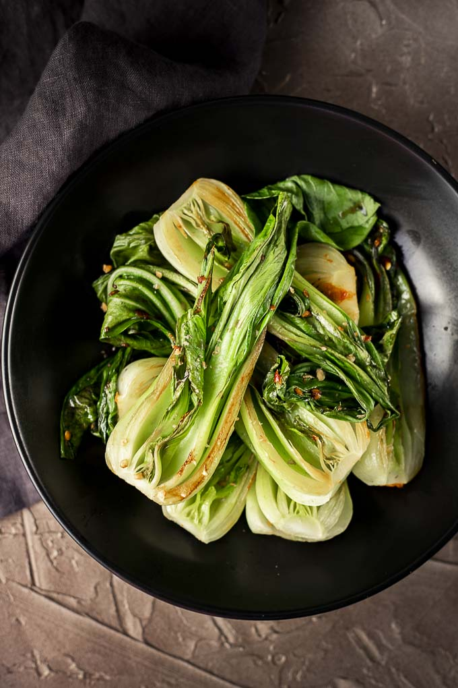

Bok Choy

Sauteed Bok Choy... the perfect veggie side dish
This recipe goes well with pretty much everything
Ingredients
- 2-3 baby bok choy
- 3 cloves garlic
- Salt and pepper to taste
Steps
- Cut bok choy into 1 inch strips lengthwise
- Dice garlic
- Add oil (coconut oil recommended) to large pan over medium-high heat, then add cut bok choy
- Cook until bok choy begins getting soft, 2-3 minutes, stirring frequently
- Add salt and pepper and garlic and cook for additional 1-2 minutes, stirring frequently
- Enjoy!
Return to homepage